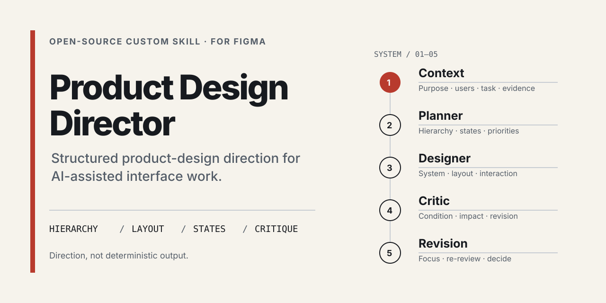
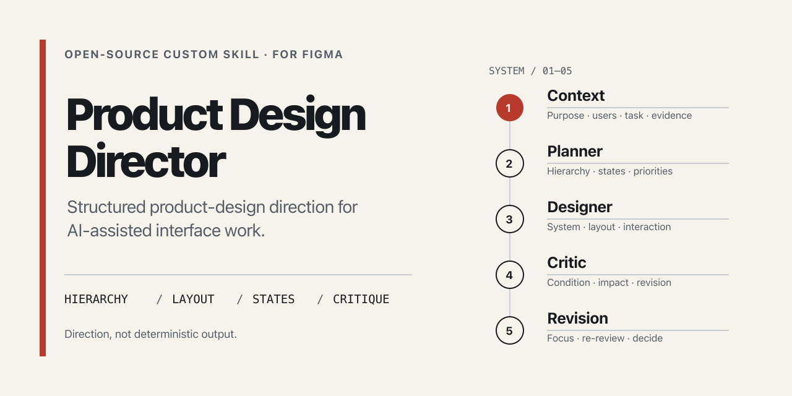
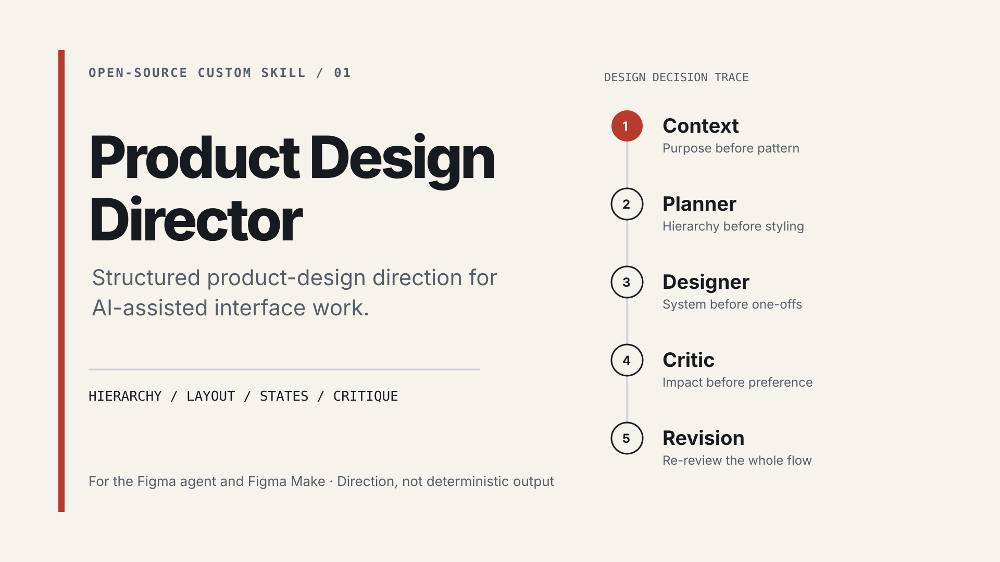
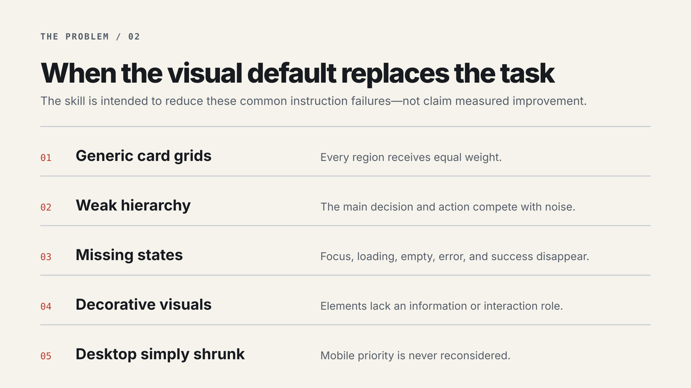
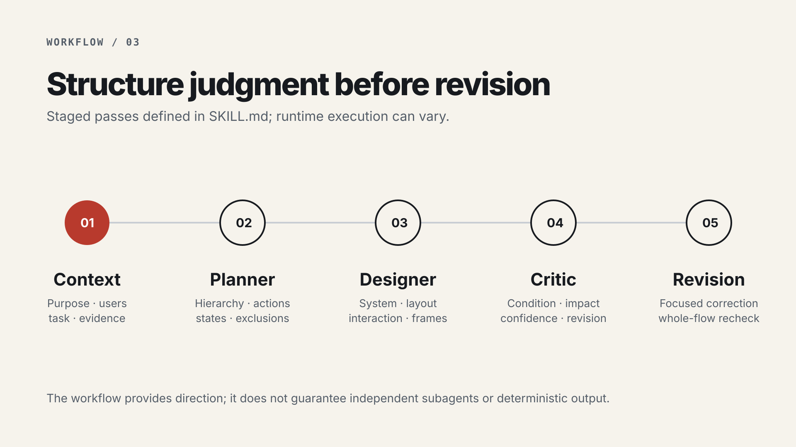
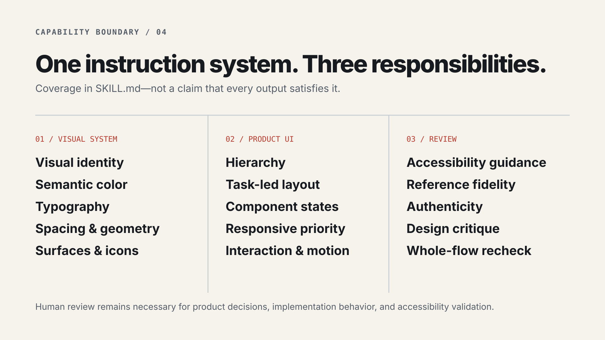
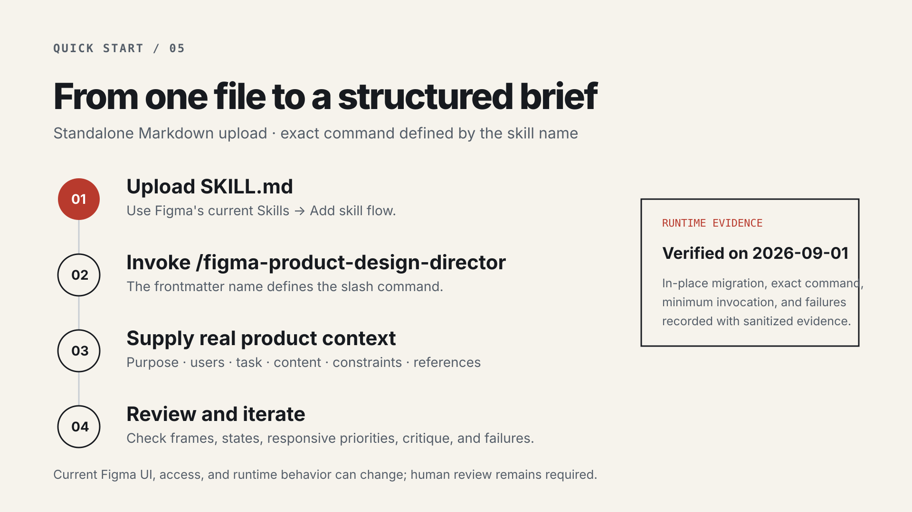
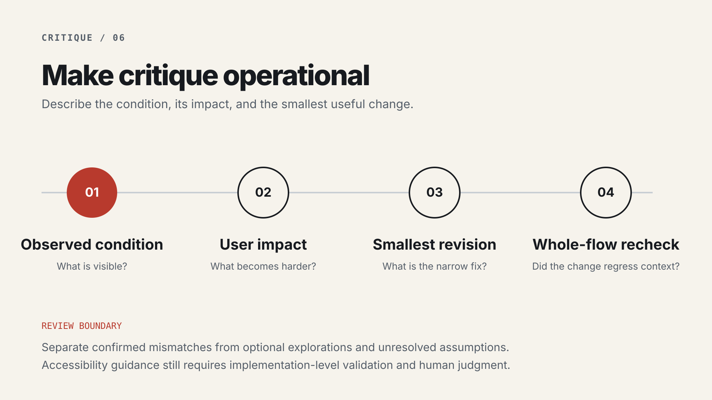
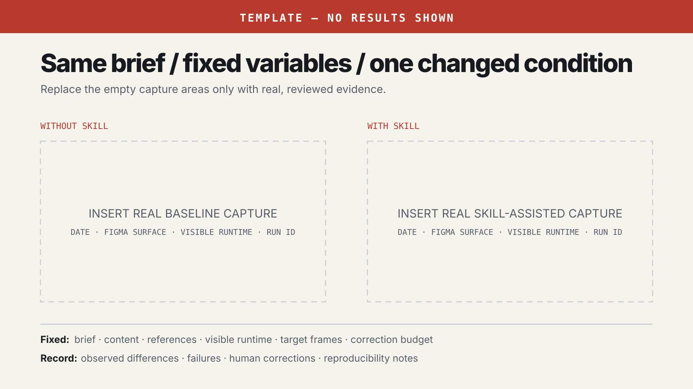

Repository preview
GitHub and social-preview source. The raster derivative should remain 1280 × 640.

{kind=link}

{kind=link}
Community sequence
Six method-led images. They describe the problem, workflow, capability boundary, use, and critique without presenting a fabricated interface result.

{kind=link}

{kind=link}

{kind=link}

{kind=link}

{kind=link}

{kind=link}
Case-study capture
This is production infrastructure for future evidence. It must never appear as a real before/after.
TEMPLATE — NO RESULTS SHOWN

Final human launch gate
Resolve these inputs with real evidence before any external publication.
- Figma linkVerify the public Community listing and Try flow.
- Live importRecord surface, date, command, output, and failures.
- Real comparisonComplete fixed-variable runs and human review.
- Support routeConfirm strangers can submit sanitized feedback.
- Release versionChoose a new version without moving v1.0.0.
- External copyAdapt to current channel rules and authorize each account.